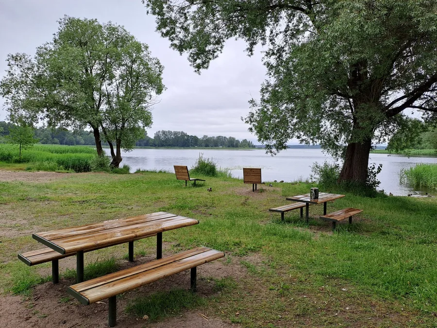
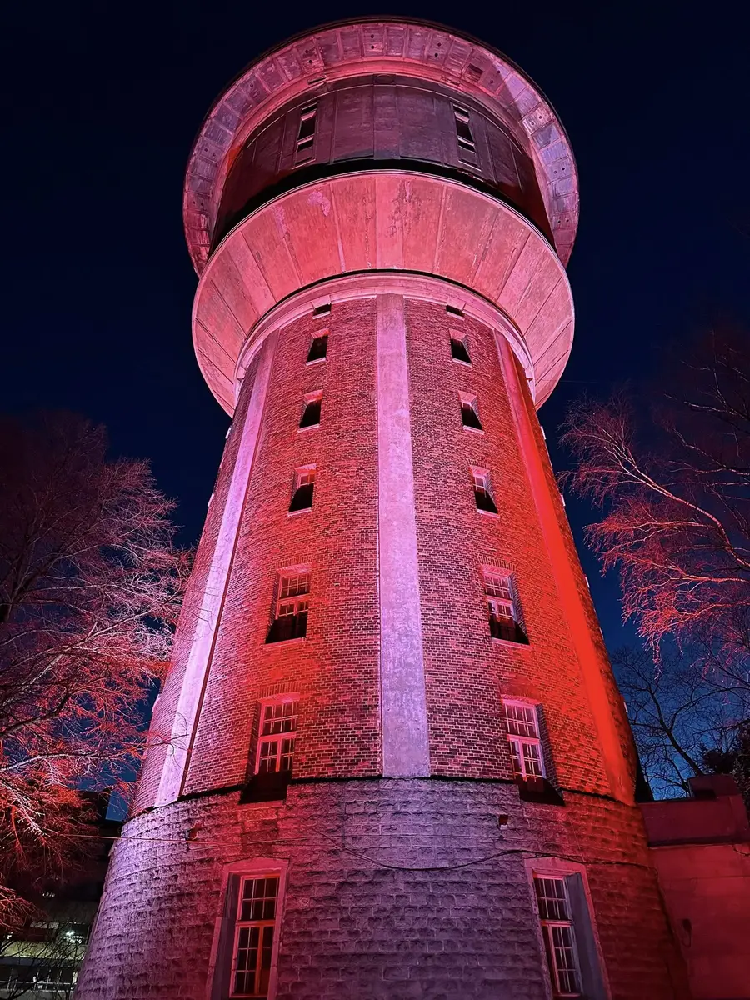

2025
Ķīšezera piknika pļava
Nekoptā ezera krasta vietā tagad ir soli, piknika galdi, zviļņi, bērnu laukums un velo novietne Ezermalas ielā.
Kopā saliktie darbi un finansējums rāda, ka desmit gados apkaimei esam piesaistījuši aptuveni miljonu eiro.

Rīgas dome 2026. gada pavasarī nodeva Čiekurkalna ūdenstorni bezatlīdzības lietošanā biedrībai. Tas ir liels uzticības apliecinājums kopienas darbam, neatlaidībai un vīzijai par torņa nākotni.
Mūsu mērķis ir saglabāt šo unikālo industriālā mantojuma objektu un pakāpeniski attīstīt to par atvērtu, sabiedrībai pieejamu vietu, kur satiekas kultūra, vēsture, izglītība un apkaimes cilvēki.
Izgaismotā 5. šķērslīnija. Ar čiekurkalniešu ziedojumiem izgaismota iela pie ieejas jaunajā skvērā.
Bibliotēkas dārzs. Kopā ar Čiekurkalna filiālbibliotēku un brīvprātīgajiem izveidots dārzs, piesaistot aptuveni 20 000 EUR.
Līdzdalības budžeta projekti. Bērnu laukums Saulkrastu ielā, piknika pļava un citi iedzīvotāju iebalsoti projekti.
Šeit var pievienot pārējos darbus no biedrības arhīva: pastkastīšu projektu, Ziemassvētku tirdziņu un citus.